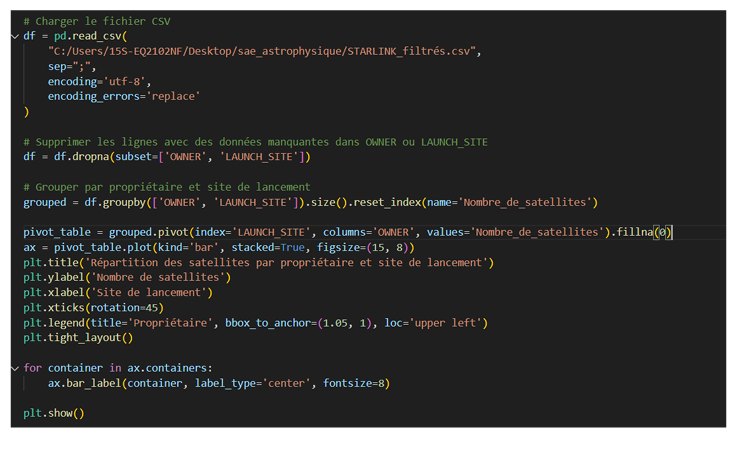

Vue d'ensemble du projet

Contexte & dispositif
Projet réalisé avec Ayi Amavigan et Ada Gadji : appliquer les méthodes statistiques multivariées à l'évaluation sensorielle de quatre miels aux profils contrastés. 143 dégustateurs ont noté 19 attributs (apparence, odeur, saveur) sur une échelle de 1 à 5, selon un plan en carré latin (24 permutations) neutralisant les biais d'ordre de présentation, lors des Journées Portes Ouvertes de l'IUT.

Préparation des données
Les 20 fichiers de saisie des différents binômes de la promotion ont été fusionnés en une base unique de 143 dégustateurs. Un centrage individuel par attribut a ensuite été appliqué (note - moyenne des 4 notes du dégustateur) afin de neutraliser les biais de style de réponse et de n'analyser que les perceptions relatives entre miels.
.jpg)
Résultats sensoriels
Le Châtaignier se détache par sa couleur sombre, son odeur torréfiée et son amertume marquée — un profil clivant. Le Toutes fleurs et le Montagne, doux et fluides, arrivent en tête de l'appréciation générale. Le Tilleul, malgré une robe claire attractive, est pénalisé par une acidité prononcée : c'est le miel le moins apprécié du panel.
17 des 19 attributs sensoriels diffèrent significativement entre les quatre miels (tests de Kruskal-Wallis et Tukey HSD, p < 0,05).

Analyse multivariée
L'ACP et l'AFM révèlent deux axes structurants : l'intensité visuelle/olfactive (clair-fluide vs sombre-empyreumatique) et l'opposition acidité/douceur en bouche. L'analyse discriminante (LDA) reclasse correctement les miels dans 58,4 % des cas — bien au-delà du hasard (25 %) — révélant un effet de halo visuel : les dégustateurs confondent les miels partageant la même couleur.
Conclusion
Cette étude a permis de mobiliser un arsenal statistique complet — de l'ANOVA à la classification ascendante hiérarchique — pour objectiver des perceptions sensorielles subjectives et en tirer des recommandations marketing concrètes (positionnement premium pour le Toutes fleurs et le Montagne, communication ciblée pour le Châtaignier, repositionnement d'usage pour le Tilleul).